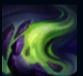
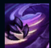
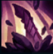
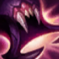
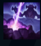

Rek'Sai
| Rek'Sai The Void Burrower | |
|---|---|
| Release date | 11.12.2014 |
| Class | Diver |
| Positions | Jungle |
| Resource | Rage |
| Range type | Melee |
| Adaptive type | Melee |
| Base statistics | |||
| Health | 570 – 2015 | Mana | N/A |
| Health regen. | 7.5 –18.55 |
Mana regen. | 7.84 – 16.34 |
| Armor | 36 – 99.75 | Attack damage | 64 – 115 |
| Magic resist. | 32 – 53.25 | Crit. damage | 175% |
| Move. speed | 335 | Attack range | 175 |
Rek'Sai este un prădător nemilos din Vid, care-și sapă tunelurile sub pământ pentru a-și prinde prada pe nepregătite și a o devora. Foamea ei nepotolită a devastat întregi regiuni din mărețul imperiu antic al Shurimei, iar negustorii și caravanele înarmate ocolesc deseori cale de sute de mile pentru a evita ținuturile ei de vânătoare. Toți știu că, odată ce-o văd la orizont, pământul îi va înghiți cu lăcomie. |  |
FURIA POPORULUI XER'SAI Rek'Sai generează furie atacând sau lovind inamicii cu abilități de bază. Ea consumă furia în timp ce se află in subteran pentru a-și reface viața. |
||
|---|---|---|---|---|
 |
MÂNIA REGINEI / CĂUTAREA PRĂZII Următoarele 3 atacuri de bază ale lui Rek'Sai le provoacă daune fizice bonus adversarilor din apropiere. În timp ce se află în subteran, Rek'Sai lansează un proiectil de pământ încărcat cu energia Vidului, dezvăluind inamicii loviți și provocându-le daune fizice. | |||
 |
INTRAREA ÎN TUNEL / IEȘIREA LA SUPRAFAȚĂ Rek'Sai intră în subteran, primind astfel noi abilități și viteză de mișcare mai mare. Raza ei de viziune este micșorată și nu poate folosi atacurile de bază. În timp ce se află în subteran, Rek'Sai poate folosi ''Ieșirea la suprafață'' pentru a-și arunca în sus adversarii din apropiere și a le provoca daune. |
|||
|  |
MUȘCĂTURĂ FURIOASĂ / TUNEL Rek'Sai își mușcă ținta, provocându-i o cantitate dublă de daune sub formă de daune reale la numărul maxim de cumuluri de furie. În timp ce se află în subteran, Rek'Sai creează un tunel refolosibil, care rămâne pe hartă mult timp. Adversarii îl pot distruge dacă stau deasupra uneia dintre cele două intrări. |
|||
 |
GOANA VIDULUI Rek'Sai însemnează pasiv țintele cărora le provoacă daune. La activarea abilității, devine imposibil de țintit pentru scurt timp și se năpustește asupra unei ținte însemnate, căreia îi provoacă daune mari în funcție de viața ei lipsă. |